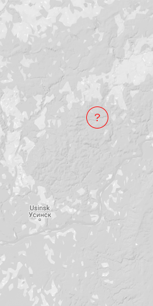

このファイルはレベル 五・三九○三 の制限付き機密扱いである
認証資格情報を挿入
SCP-3930
「当該資料へのアクセスは、生存確認済みの七名にのみ許可されるものとする」

ウシンク・コミ共和国
ロシア連邦
SCP-3930の継続的収容の目的において、当該ファイルへのアクセスを許可された職員を除き、 SCP-3930に配属されたすべての職員は、SCP-3930は存在せず、 過去に存在した事実もないことを理解することが不可欠である。 SCP-3930の存在を主張する職員は直ちに再配置され、 SCP-3930が存在しないという認識を確保するための心理検査を完全に受けなければならない。 当該認識を獲得できない者は、現行のSCP-3930研究主任に送致され、終了措置の対象とする。
SCP-3930に配属されたすべての職員は、 いかなる文言または命令がその内容上SCP-3930の存在を示唆する場合であっても、 SCP-3930は存在しないことを理解しなければならない。
SCP-3930は発見地点において収容されている。当該地域への立ち入りは厳格に禁止されている。 SCP-3930を囲む周辺には直径約1kmの境界線が設定されており、 SCP-3930に接近する意図をもってこの境界を越えた無認可個人は即時終了措置の対象とする。 当該ファイルへのアクセスを許可された七名の個人は、 SCP-3930の収容およびそれに従事する職員の運用に関し、全権限を保持するものとする。
SCP-3930に関する継続的非存在状態の維持が、SCP-3930の収容手続そのものである。
SCP-3930は、ロシア連邦ウシンスク近郊に存在する直径約1kmの境界内に位置する「静的虚無」であり、 1970年代初頭にソビエト科学者によって確立されたものである。SCP-3930は光または音を放射・吸収せず、 形状も質感も有さず、通過不可能であり、いかなる方法によっても相互作用・操作することはできず、次元的性質を持たない。 多様な手法を用いた広範な試験の結果、財団研究班はSCP-3930の領域内には一切の存在が認められないことを99.999%の精度で証明している。
それにもかかわらず、SCP-3930に曝露された対象は、必ずその内部に周辺環境と類似した動植物群、さらには構造物を知覚したと報告する。 いかにして個体がSCP-3930を知覚し得るかは現時点で不明であり、複数の仮説が提示されている（詳細は補遺3930.3を参照）。 SCP-3930は通過も相互作用も不可能であり（存在しないため）、既存の物体や実体が「進入」することはできない。 しかしながら、SCP-3930へ接近し進入を試みる個体は、外部観測者からは実際にそうしているかのように認識される。 対象がSCP-3930の「境界」を越えた瞬間、当該個体は存在を喪失する。 にもかかわらず、外部観測者はその後もしばらくの間、対象を認識し続けるが、一定の時点をもって完全に認識不能となる。
要約すると、
-
SCP-3930は存在しない
-
SCP-3930は物理的座標、時間的座標、特異点、真空、異次元空間、メタ構造体、その他いかなる定義にも該当しない。
いずれの定義にも「存在」が前提条件として必要であるが、SCP-3930はこれを欠いている。 -
SCP-3930は、知覚上のいかなる性質にもかかわらず、「何か」であると表現することはできない。
-
SCP-3930は存在しないため、そこに存在する何かを包含することは不可能である。
したがって、SCP-3930を通過または進入しようとするあらゆる対象は、SCP-3930が非存在である以上、同様に存在を喪失する。 -
上記すべてにかかわらず、人間はSCP-3930を知覚可能であり、SCP-3930により非存在化した対象についても同様に知覚する。
-
特筆すべきは、SCP-3930に関する知覚属性が、SCP-3930を認識している人数、
かつその影響が認識によって生じている事実を理解している人数によって顕著に変化する点である。（詳細は補遺3930.3を参照）
さらに、人間の知覚がSCP-3930の認識属性に与える影響は、記憶処理薬の投与によっても、あるいは自然死によっても軽減されない。 既知の唯一の方法は、当該対象者自身がSCP-3930へ進入し、非存在化することである。 この影響は即時的ではなく、約31日間にわたり漸減し、その後安定状態に回復することが確認されている。
人間の知覚がSCP-3930の認識属性に及ぼす影響は、記憶処理薬の投与によっても、さらには自然死によっても軽減されないことが確認されている。 SCP-3930の認識能力に変化を及ぼす既知の唯一の方法は、当該対象者自身がSCP-3930へ進入し、非存在化することである。 当該影響は即時的に発現するものではなく、約31日間にわたって漸減し、その後安定状態へ回復する。
SCP-3930の安定性を保持したまま知覚可能な人数の上限は10名であり、 そのうち7名は収容措置に割り当てられ、2名は実験目的に充当され、残余の1名は民間からの介入に備えて確保されている。
既定の理解に基づき、SCP-3930内部への探査は不可能とされている。 にもかかわらず、外部観測者はSCP-3930へ進入した個体（すなわち非存在化した個体）を知覚し、 さらには当該個体からの音声通信を受信することすら可能であることが確認されている。
特筆すべきは、SCP-3930周辺において映像および音声記録機器が正常に機能しない点である。 映像記録装置は「非実体」を撮影することができず、SCP-3930の映像記録は、通常の観測時と同様に異常な視覚的認識異常の影響を受ける。 音声記録についても同様である。要約すると、あらゆる映像・音声記録機器はSCP-3930へ進入した瞬間に機能を停止する。 しかしながら、観測者はそれらが正常に稼働しているかのように認識し続け、たとえ不整合が確認されても同様である。
以下は、対象3930/7/42が知覚した音声記録の書き起こしである。 当該記録の作成過程において、対象3930/7/4はマイクに向かって発話し、応答を知覚した後、その応答を別の記録装置に再度発話した。 したがって、以下に示されるものは、3930/7/4が当時実在しなかった別の人間と会話を交わしているかのように見える記録であり、 両者の発言はすべて3930/7/4によって発話されたものである点に留意されたい。 当該事象は3930/3/3: によって監督され、知覚された応答の正確性が確認されるとともに、記録は事後に精査・編纂された。
[OPEN LOG]
[記録開始]
3930/7/4: 了解、D-124。前方へ歩き始めてほしい。目の前に何が見えるか伝えてくれ。
D-124: 木々。森だ。
3930/7/4: 動物や野生生物は？
D-124: いない。
3930/7/4: 了解。前進を続けろ。
沈黙。
3930/7/4: 異常現象の境界に近づいています。何か見えますか？
D-124: いや、まだただ…
この時点で、D-124はSCP-3930内に消失し、存在しなくなった。音声監視装置により、彼の無線機が機能停止したことが確認された。いずれにせよ、3930/7/4も3930/3/3: もこれに気づかなかった。
D-124: ―木や茂みとか、そういうもの。
3930/7/4: 前進を続けよ。
沈黙。
D-124: おい、待て。この開けた場所に何かある。建物のようだ。
3930/7/4: 詳細を説明できるか？
D-124: ええ、それは…背が低い。たくさんの…アパートみたいな建物だと思う。でもかなり草が生い茂っていて、しばらく放置されているようだ。
3930/7/4: その構造物の大きさは？
D-124: ええと、わからない。たぶん…百フィートくらい？こっち側にドアが六つある。後ろは曲がってるみたいだ。
3930/7/4: そのまま進んでくれ。
D-124: 了解。
沈黙。
D-124: ところで今気づいたんだが、何か音がする。すごく小さいんだ。さっきは風か草かと思ったけど、明らかに違う。
3930/7/4: どんな音だ？
D-124: （間を置いて）正直、わからない。かすかだ。
3930/7/4: 了解。状況は随時報告せよ。
沈黙。
D-124: よし、建物の屋上に着いた。間違いなくアパートだ。白い壁に茶色のドア。木造だ。あ、こっちに別の建物がある…オフィスかな？
3930/7/4: ドアは開けられるか？
D-124: 試してみる。待ってて。（間）こっちは鍵かかってる。（間）こっちもな、待って。（間）窓から中を覗いてるんだ、何かあるか確認しようとしてるんだけど…暗くて。カーテンの向こうは見えねえ。
3930/7/4: 引き続きドアを確認してください。
D-124: 了解。（間）一つ見つけた。見てみよう。（間）間違いなく…間違いなく、しばらく誰も来ていない。暗くて埃っぽい。寝室が一つだけだと思う。家具はほとんどなくて、椅子と小さな本棚がある。でも本棚には何も置いてない。寝室を見てみる。（間）シングルベッド。箪笥はあるが…中身は空だ。ベッドは整えられている。カーテンは全部閉まっている、待って。（カーテンを開ける音）ここの窓は、あの、この空き地の反対側に向いている。この建物は大きなL字型で、あっちの方へ少し続いている。
3930/3/3: （マイクから離れて）その明かり消してくれないか？明るすぎるんだ。
D-124はその後5分間、部屋と隣接する浴室の捜索を続ける。やがて3930/7/4に退出を促される。
D-124 ああ、わかった、ちょっと待ってくれ。
3930/7/4: どうした？
D-124: 俺…さっきこのブラインド開けたっけ？
3930/7/4: え？
3930/7/4: どうした？。
D-124: ブラインドが、ちくしょう…さっきカーテンを開けたんだ、つまり。寝室に入った時にな。
3930/7/4: わからない、私…
D-124: いや、絶対に開けた。はっきり覚えてる、だってその窓から外を見たんだ。このカーテンを開けたんだ。（間）他に何かあるのか？
3930/7/4: そう考える根拠はありません。
D-124: じゃあ誰がカーテンを閉めたんだ？なんで閉まってるんだ？
3930/7/4: それはわかりません。
D-124: もちろん分からないだろうが…おい、俺が確かに開けたんだ。こっちに歩いて行って外を見て…ああ…そうだな、外に誰かがいるって言ったか、それとも…はあ。実際何と言ったか覚えてない。間違ってたのかも。（間）変だな。
3930/7/4: もう一度言って？
D-124: いや、ただ… まあ、ここを進むことにするよ。
沈黙。
D-124: 次の部屋も同じような感じだ。でも、あの部屋とは逆向きなんだ。こっちの部屋にはテレビがある。
3930/7/4: テレビはついてるのか？
D-124: え？いや。ここ数週間、いや数年誰も来てない。そんなはずは…（間）いや、待てよ？テレビがまだ温かい。誰かが入ってたんだ。ちょっと確かめてみる…（間）
3930/7/4: どうした？
D-124: 映ってるけど…変だ。チャンネルが飛び飛びで。映像だけ、写真みたいな。白黒で。逆さまの海。鏡と顔。火葬の火葬台。（間）ある一つの映像に何度も戻る。黒い背景に…（間）暗がりの形が漂ってる。一つじゃない。すごく小さい。見えにくい。消えたり現れたり。（間）聞こえるか？
3930/7/4: 聞こえません。
D-124: またあの音だ。テレビからじゃない。外からか？（間）これ、えっと…はあ。
3930/7/4: もう一度言って？
D-124: ええと、つまり…これは狂った話に聞こえるのは分かってるけど、誓って言う、あの壁のドアからこの部屋に入ったのに、今そのドアがないんだ。代わりに窓がある。
3930/7/4: 窓の外は見えますか？
D-124: 見える、ええと…（間）ええと、これは本当に変に聞こえるけど、カーテンが開けられないんです。引っ張ろうとすると、その奥に…またカーテンがあるんです。その奥にもまたカーテンが。
3930/7/4: この部屋に他の出口はありますか？
D-124: ある…
この時、移動研究ステーション内の電話が鳴り始めた。3930/7/4とD-124が同室にいる中、後者が応答しようと立ち上がった。その瞬間、3930/7/4は音声送信機の反対側、D-124付近で別の電話が鳴る音を聞いたと報告した。
D-124: 電話が鳴ってる。ここにあった覚えはないな、待ってろ。
3930/7/4: おい、待てよ―
D-124と3930/3/3: が同時に応答もしもし？（間）ああ、監視中だ。（間）この会話を盗聴している。（間）聞こえるか？
この時点で、3930/7/4はD-124から発信された自身の受信機で激しいエコーを検知する。
D-124と3930/3/3: が同時にもしもし？もしもし？聞こえるか？今俺と話してるのか？これは何だ？
3930/7/4: おいー電話切れ！このクソ電話を切れ！
3930/3/3: は電話を切り、混乱し方向感覚を失った様子を見せる。音声受信機の反対側で、D-124も同様の困惑を示す。
D-124: あれは何だ？ 聞こえたか？
3930/7/4: D-124、現在いる部屋から出口はあるか？
D-124: ああ、階段がある。そこを試してみよう。
3930/7/4: 了解、実行してください。
沈黙。
D-124: よし、階段を下りて…別の部屋に来た。いや待て。ここが？（間）あのさ、さっき言い忘れたんだけど、肌がすごく変な感じなんだ。
3930/7/4: どういう意味だ？
D-124: 粉っぽい感じ。腕に手を滑らせると、なんか…どう説明すればいいか。一瞬、そこに存在しなくなるような感覚だ。
3930/7/4: 了解。現在の周囲の状況は？
D-124: 前の部屋と同じソファがあるけど、何か違う。部屋のサイズが違うのかな？少し広く感じるし、物が散らばっている。
3930/7/4: 階段を戻れますか？
D-124: 階段？
3930/7/4: 今降りてきた階段です。
D-124: どの階段？
3930/7/4: あなたは階段を一気に降りてきた。この部屋に入るために。
D-124: いや、正面玄関から来たんだ、すぐここだよ。（間を置く）変だな。今、ドアはロックされてる。ところで、それ、聞こえないのか？
3930/7/4: 聞こえている音を説明してもらえるか？
D-124: あの…雑音って聞いたことある？
3930/7/4: ええ。
D-124: 時々、空白の部分で何か聞こえるだろ？脳が隙間を埋めるんだ。この音はそれと同じで、脳が作る音なんだ。ただ雑音がないだけ。すごく大きいわけじゃないけど、すごく目立つんだ。（間）たぶん…ちょっと見てみる。ここから出るドアがどこかにあるはずだ。探してみる。
D-124はその後4時間にわたり、現在いる部屋から出口を探し続ける。管理グループがD-124の脱出を支援しようとするも、彼は部屋を出ることができなかった。
D-124: また気づいたことがある。なぜこんなに時間がかかるのか分かった。あらゆるものの間の空間が今、非常に大きくなっている。ソファからテレビまで歩くのに10分かかる。キッチンまで行くのに20分かかった。
3930/7/4: え？いつから？なぜ早く言わなかった？
D-124: わからない、俺…（間）ドアをノックする音がする。待ってて。（間）もしもし？（間）外に男がいる。俺が聞いてるか確かめたいらしい。
3930/7/4: 私が？
D-124: ああ、そうだ。（間）わかった。（間）彼は抜け道があるって言うんだ、床を、えっと、床をくぐって下へ行くんだ。十分に後ろに倒れれば、そこへ行くだけだって言うから…
沈黙。D-124は38分間応答しない。3930/7/4と3930/3/3: は38分間発話しない。
D-124: ホワイトノイズ。
沈黙。
3930/7/4: まだ着いてないのか？
D-124: 思ったより遠かった。ようやく分かってきた気がする。聞いてるか？
3930/7/4: 聞いてるか？
D-124: よし、聞き続けるんだ。今、俺は下の方にいる。ほら、俺が見てるものは自分に関係あるものだと思ってたけど、実はそうじゃない。本当に見てるわけじゃないんだ。（間）ああ、これでずいぶん納得がいく。俺には無理だけど、君にはわかるかも。どうでもいいことかもしれない。（間）さっき雑音を聞くって話しただろ？今、俺の目でも同じことが起きてる。空白を埋めてるんだ。
3930/7/4: 何が見える？
D-124: ここに世界の穴があって、この場所は排水口みたいに吸い込まれた。人もね。今、実際に見えるんだ。建物全体が、あの小さな…一点に引き込まれていくのを。ひび割れて、砕け散っていく。（間）ああ、そうだ。ああああ。これは反応だ。反応みたいなもの。自然は真空を嫌わないが、人間は嫌う。お前たちの心はこんなものには耐えられないだろ？ 星を見つめて何かを見出すのは、それが人間の本能だからだ。意味を見出そうとする。秩序とは人間が作り出した概念だ。
3930/7/4: 今いる空間を説明できるか？
D-124: 説明しない。
3930/7/4: どういう意味だ？
D-124: 実は説明しないってことは分かってるだろ。気づいた瞬間に、これは全て終わる。
3930/7/4: 何に気づく瞬間に？
D-124: 画面から目をそらすだけで、あの…あのパターンが見えなくなるんだ。僕は…目をそらせば、君は僕を見なくなる。そして…僕の声も聞こえなくなる。それが僕が感じていることだ。ずっと感じ続けてきたことだ。そう、それは理にかなっている。瞬きすれば失う。一度消えれば、また何もないものになる。だから彼らは君の注意を引きつけようとする。注意を失えば、彼らは何もなくなってしまう。そして—
3930/7/4: 待て、君に…
D-124: いやいやいや、目をそらせばパターンは消える。耳を塞げば聞こえなくなる。彼らは何者でもない、そして今私は…わからないのか？
3930/7/4: そ…
この時点で、現地発電機が作動したため電気系統に軽微な電圧低下が発生。3930/7/4と3930/3/3: の両システムが直ちに音声送信機の機能停止を検知。D-124への連絡試行は失敗に終わる。
[記録終了]
補遺3930.3: 3930/1/1とのインタビュー記録
以下は、財団による介入開始以前にSCP-3930の収容手続きを遂行していたソビエト科学者、
アンドレイ・ワシリエフ博士に対して実施されたインタビュー記録の抜粋である。
ワシリエフ博士は最終的に財団からの任用を受け、直後に識別番号3930/1/1を付与された。
インタビュアーはピョートル・クズキン博士が務め、翻訳はサイモン・ピエトリカウ博士によって提供された。
[OPEN LOG]
[ログ開始]
クズキン博士: 何だ？
クズキンヴァシリエフ博士: 測定可能な意味では何もない。静的で、何の干渉も受けない虚無だ。何も存在しない空間だ。
クズキン博士: どうやってここに？
クズキンヴァシリエフ博士: 不明だ。国家内部か外部勢力のいずれかによって発見され、我々が最初に到着した。
クズキン博士: その実態を把握しているのか？
クズキンヴァシリエフ博士: 把握？把握すべき事実は何もない。そこには何もない。測定すべきものも、検証すべきものもない。その境界を越えたものは消え去り、存在しなくなる。記録装置を持った兵士を送り込んだが、全員同じ運命を辿った。
クズキン博士: 君のチームの残りの者たちはどうなった？
クズキンヴァシリエフ博士: ああ…（間を置く）認識が鍵だ。あらゆる検査結果はそこに「不在」があることを示すだろう？だが君がそれを見れば、依然として森や木々、動物さえも見える。深く入り込めば、建物や人影すら見えるかもしれない。だが、それらは全て虚構だ。建物がどんな形をとろうと、それを目にした時点で、あなた自身もまた虚構となる。あなたは他者の精神が認識する自己の反映に過ぎなくなる。この虚無は…（間を置く）憎悪に満ちた鏡だ。それはあなたに見られることを渇望する。見る者が増えれば増えるほど、その憎悪は増幅するのだ。
クズキン博士: だが、君のチームの他のメンバーは？
クズキンヴァシリエフ博士: 我々は多すぎた。あまりにも多くの者が虚無を見つめすぎた。すると、それは叫び始めたのだ。
クズキン博士: 叫び？
クズキンヴァシリエフ博士: 近づけば、君も聞こえ始めるだろう。かすかで、何でもないかもしれない。いや、それ以下かもしれない。だが、確かに音だ。何か奇妙なことが起きたのだ。人間の心は、何もないところにパターンを見出すように進化してきた。だから何もない空間に投げかけられると、心は無から何かを作り出すのだ。君が聞くのは原始的な、ほとんど感知できない知性だ。それは虚無の縁を走る閃光――我々の心が存在しない何かを感知しようとする試みだ。そしてそれは憎んでいる。
クズキン博士: 憎んでいるとはどういう意味だ？なぜ憎む必要がある？どうやって分かる？
ヴァシリエフ博士: 我々の数が多すぎたからだ。チームの全員が虚無を認識し、それぞれがそれを捉えようとしていた。これらの閃光、これらの微小な叫び声は、やがて…結びつき始めた。誤解するな、クズキン博士、それらは実体ではない。ニュートリノにとってのニュートリノのようなものだ。我々にとってのニュートリノがそうであるように、無にすら満たない存在だ。だが彼らは、何らかの形で自らの無を自覚しており、憎悪に満ちている。その存在は、苦痛そのものだと私は考える。宇宙が存在するのを憎み、自ら存在することを憎み、そして我々が彼らを存在させたことを憎む。憎悪以外の何物でもない。（間）十分な時間が経ち、我々の多くがこの虚無を覗き込もうとした結果、何かがそこから這い出てきた。（間）その後、我々は十人になった。異常はそれ以来安定している。
クズキン博士: 何が出てきた？
沈黙。
クズキン博士: ここにどれくらいいる？
クズキンヴァシリエフ博士: 数十年だ。
クズキン博士: なぜ救援を要請しなかった？
クズキンヴァシリエフ博士: 一度その叫び声を聞いたら、忘れられない。救援を要請すれば、別の魂を地獄に落とすだけだ。
クズキン博士: 先日、残りの科学者たちが消えた。どこへ行った？
クズキンヴァシリエフ博士: 虚無へ入った。
クズキン博士: なぜだ？
クズキンヴァシリエフ博士: 我々は今、多すぎる。お前が十二人を連れてきた。元々八人だった。十人を超えてはならない。虚無を一度知った者の心は、それを忘れさせられない。今は十三人だが、十人を超えてはならない。
クズキン博士: 君はこの虚無を、まるで知性を持つ生物のように語っている。この無がどうして知性を持つものになり得る？
クズキンヴァシリエフ博士: それらは別物だ。虚無は虚無のまま、存在しない領域だ。測り知れず、変えられず、我々はそれを何も知らない。だがパターン・スクリーマーは、そう、ある意味で知性を持つ。しかし彼らが知性を持つのは、彼らが我々そのものだからだ。彼らはこの忌まわしい鏡に映った我々の姿なのだ。
（カメラ外での動き。クズキン博士 は目をそらす。クズキンヴァシリエフ博士 は一瞬カメラを見る。）
クズキン博士: わかった。他に何かあるか？
クズキンヴァシリエフ博士: 10体を超えることは許されない。私が虚無へ赴く。その後、お前たちのうち2体が追随せねばならない。
クズキン博士: もし従わなければ？
沈黙。
[記録終了]